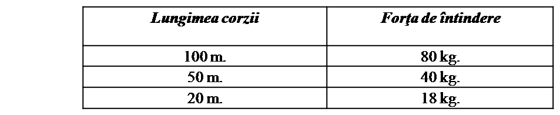
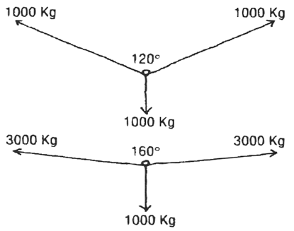
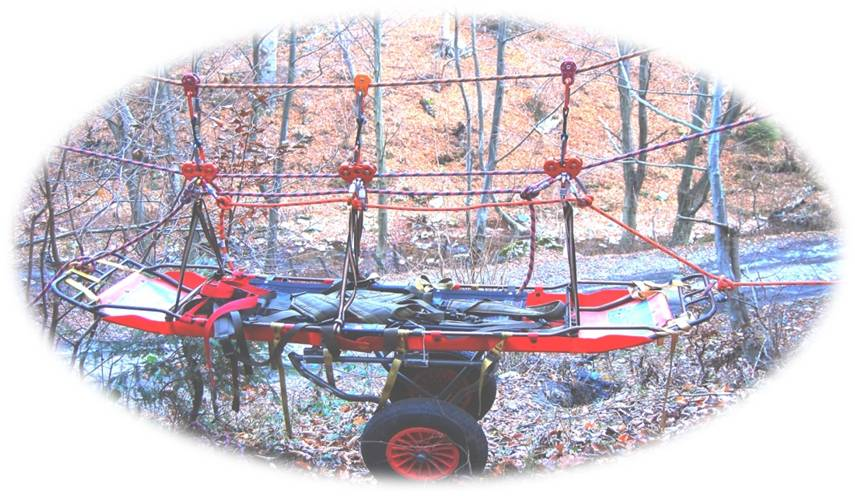
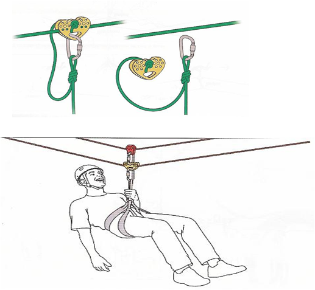
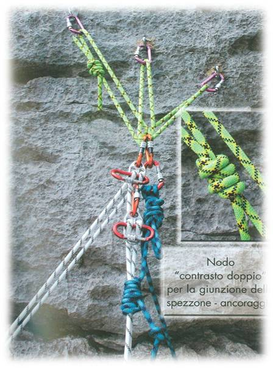
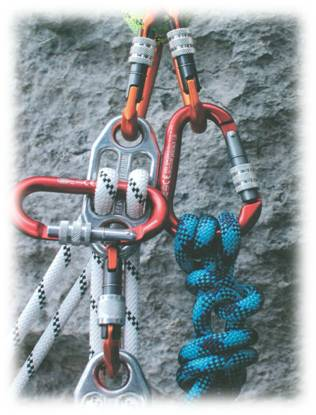
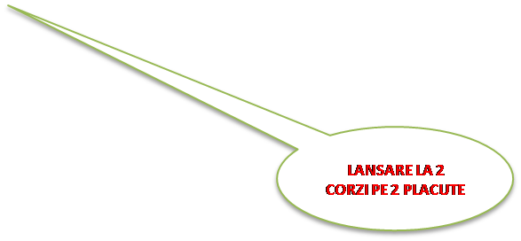
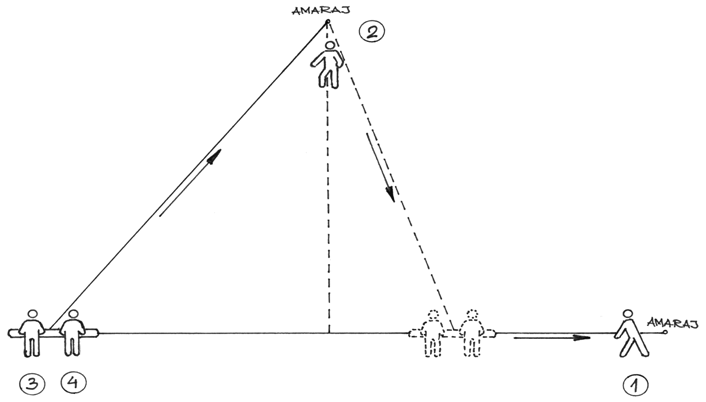

ASOCIATIA NATIONALA A SALVATORILOR MONTANI DIN ROMANIA
PROCEDURI ȘI TEHNICI DE BAZĂ ÎN SALVAREA MONTANĂ

Transportul accidentatului în abrupt
Bucla reglabilă
Acest dispozitiv este folosit pentru ancorarea salvatorului în coarda de lansare, în cazurile în care se coboară un accidentat în targă iar salvatorul însoţeşte mijlocul de transport.
De reţinut: poziţia tărgii în timpul transportului trebuie să fie la nivelul taliei salvatorului, bucla autoreglabilă dând posibilitatea reglării acestei poziţii prin deplasarea blocatorului pe firul buclei.
Materiale folosite pentru acest procedeu:
•Buclă din coardă de circa 2 m. lungime şi cu diametrul de 9-10,5 mm.
•Carabinieră cu buclă expres de 22 KN şi cu lungimea de 12 cm.
•Blocator fără mâner.
•Carabinieră cu siguranţă.


Inodarea a doua corzi sub tensiune
Inodaarea se foloseşte numai atunci când salvatorul montan, cu sau fără accidentat, trebuie lansat pe un perete mai lung decât lungimea corzii.
Pentru aceasta trebuie să ţineţi seama de următoarele:
•În condiţii normale este permisă doar o înnodare.
•Corzile statice sunt foarte sensibile la căderi de pietre.
•Prin înnodare, rezistenţa unei corzi se reduce cu cca. 50%.
•Frânarea trebuie întreruptă la timp. Trebuie să rămână cca. 80 cm. din frânghie.
•Cu o mână se va presa coarda în semicabestan iar cu cealaltă mână se va face nodul de blocare.
•Sub nodul de blocare se va face, la cca. 30 – 40 cm, un nod Prusik sau Beluneeze cu o buclă de fixare într-un piton de asigurare.
•După înnodarea celor două corzi şi trecerea nodului sub pitonul de asigurare, se va bloca coarda cu nodul de blocare. În continuare, se va desface bucla de asigurare a corzilor şi se va elibera uşor, până se întinde coarda de lansare. Când s-a întins coarda, se va bloca şi se va desface nodul Prusik de pe ea.

Transportul accidentatului pe verticală
În ciuda existenţei unui material din ce în ce mai performant, a traseelor din ce în ce mai bine echipate şi a creşterii nivelului de pregătire a practicanţilor, alpinismul nu este un sport lipsit de riscuri. În majoritatea cazurilor, accidentele sunt datorate neglijenţei sau ignoranţei şi ar putea fi uşor de evitat.
Operaţiunile de salvare şi transport al accidentaţilor din pereţi verticali necesită o tehnică deosebită, de aceea putându-se executa doar cu salvatori montani experimentaţi.
Fazele acestor operaţiuni sunt:
a- Deplasarea la locul accidentului;
b- Acordarea primului ajutor;
c- nstalarea accidentatului în dispozitivul de transport şi transportul accidentatului.
Deplasarea la locul accidentului:
Se poate face prin 3 metode:
•De sus în jos, prin rapel.
•De jos în sus, prin căţărare.
•O echipă prin rapel, o echipă prin căţărare.
În funcţie de gravitatea accidentului şi de dificultatea zonei, se stabileşte numărul de salvatori montani ce se vor deplasa la locul accidentului. Indiferent de caz, numărul acestora nu trebuie să fie mai mic de trei.
În cazul în care echipa se deplasează de sus în jos, se localizează locul accidentului după care, de deasupra peretelui respectiv, se va coborî în rapeluri succesive până la accidentat. La noi în ţară, această tehnică este foarte utilizată deoarece relieful permite ajungerea pe deasupra pereţilor, pe căi mai uşoare.
Dacă locul în care s-a produs accidentul se găseşte în treimea inferioară a peretelui, deplasarea se va face de jos în sus, prin căţărare.
Dacă traseul pe care urmează să se efectueze transportul accidentatului este lung şi anevoios, se recomandă ca o echipă să se deplaseze de sus în jos iar alta de jos în sus şi să se amenajeze locurile pentru amarajele necesare transportului.
Acordarea primului ajutor:
În funcţie de afecţiunile accidentatului, i se va acorda primul ajutor şi, dacă este necesar, protecţie termică, pentru a putea rezista la transport.
c) Instalarea accidentatului în dispozitivul de transport şi transportul accidentatului:
În cazurile în care accidentatul poate colabora iar afecţiunile acestuia nu necesită instalarea lui într-o targă rigidă, transportul se poate face cu ajutorul sacului Graminger sau Tiromont. Sunt cazuri când se poate folosi chiar scaunul de la vesta accidentatului, cu condiţia ca acesta să fie fixat de salvatorul montan printr-o buclă. În acest caz, salvatorul montan are sarcina doar de a proteja accidentatul împotriva loviturilor de perete.
Dacă afecţiunile accidentatului sunt grave, este necesar ca acesta să fie instalat într-o targă UT 2000, Mariner, Alpină, etc. Este obligatoriu ca accidentatul să fie asigurat şi în dispozitivul de transport, printr-o buclă de coardă legată între nodul de ancoraj şi vesta accidentatului. Dispozitivul de transport va fi însoţit, protejat şi dirijat la coborâre de unul sau doi salvatori montani (fig. 103-104)


Coborârea tărgii:
a) Cu un salvator montan
b) Cu doi salvatori montani
Fig. 103 ,104

Transportul accidentatului din surplombă
Salvarea şi transportul accidentaţilor din surplombă sunt cele mai grele intervenţii pentru o echipă. Numai printr-o tehnică corectă reuşesc astfel de intervenţii dificile. Folosirea procedeului de ancorare poate fi decisivă în asemenea cazuri.
Pentru zonele unde surplomba este mare iar accidentatul se găseşte
în perete, sub surplombă, există două posibilităţi de salvare: (fig. 106 si 107)
Cazul I
•Vor fi coborâţi doi salvatori montani legaţi la două dispozitive de coborâre separate. Cei doi vor fi legaţi între ei cu o coardă. Când se ajunge la extremitatea surplombei, unul dintre salvatori va rămâne acolo iar al doilea va coborî spre accidentat, asigurat prin coarda care îl leagă de salvatorul rămas sus. Concomitent se eliberează şi coarda de lansare. Coborârea salvatorului la accidentat se va face cu ajutorul pitoanelor, prin inelul cărora se vor fixa nişte bucle de circa 20 cm. care rămân în perete.
•Odată ajuns salvatorul la accidentat, se vor lega unul de celălalt şi vor coborî până la un punct de regrupare optim.
•În cazul în care este necesară continuarea coborârii, este bine ca din regrupare, accidentatul să fie preluat de o altă echipă, iar cei doi salvatori să fie recuperaţi.


Fig. 106
Cazul II
•Se coboară până la baza surplombei, ca în cazul precedent. De aici, unul dintre salvatori va fi coborât până în dreptul accidentatului (cu cca. 1 metru mai sus decât acesta). Salvatorul va arunca o buclă de coardă în aşa fel încât accidentatul să o prindă şi să o fixeze în inelul unui piton din zonă. Salvatorul se va autofila până la accidentat şi se va lega de acesta, apoi va elibera progresiv bucla de tracţiune până va ajunge la verticală. De aici, procedeul va fi similar cu cel descris mai sus.


Fig. 107
Executarea pendulărilor (fig.107)
În operaţiunile de salvare din pereţi stâncoşi, de multe ori suntem nevoiţi să folosim tehnica pendulărilor, în cazul în care zona accesibilă este o zonă paralelă cu cea în care se află accidentatul şi situată pe acelaşi perete cu acesta.
Descrierea procedeului
•a-Capul de coardă va intra în rapel dirijat, fiind asigurat din regrupare cu două corzi, de către secund. Deplasarea se va face până se va găsi o posibilitate de amenajare a unui traseu pe verticală.
b-Se vor fixa pitoane de asigurare pe noua variantă, până într-un punct de unde putem amenaja o regrupare (atenţie la lungimea corzilor disponibile).
c-Din regruparea precedentă, secundul va executa un rapel, fiind asigurat de către capul de coardă din noua regrupare, până când secundul va ajunge pe noul traseu.
d-Secundul va recupera corzile de rapel şi va continua căţărarea până în noua regrupare.
Pentru executarea unor astfel de procedee, salvatorii montani trebuie să cunoască foarte bine, din punct de vedere tehnic:
-Coborârea ;
-Manevre de coardă.
Pentru executarea unor astfel de procedee, salvatorii montani trebuie să cunoască foarte bine, din punct de vedere tehnic:
-Coborârea in rapel ;
-Manevre de coardă

Fig. 107
. Forţele de tracţiune asupra punctelor de ancorare la Tiroliana
Forţa de tracţiune în coardă şi în punctele de ancorare
La montarea unui sistem de corzi între două ancoraje, trebuie acordată o atenţie deosebită puterii de întindere a corzilor. Trebuie evitată producerea unei forţe de tracţiune nepermisă asupra punctelor de ancorare.
.
Mod de lucru
Pentru asigurarea securităţii, trebuie să ţinem cont de următoarele:
•Coarda nepusă sub sarcină va fi preîntinsă:
Lungimea corzii Forţa de întindere
100 m. 80 kg.
50 m. 40 kg.
20 m. 18 kg.
•Coarda va fi ancorată în punctele de ancorare.
•Coarda va fi pusă sub sarcină.
Condiţionat de elasticitatea corzii folosite, aceasta se va lungi. Această lungime rezultată este suficientă să obţinem şi să lucrăm în condiţii optime de securitate.
Din ilustraţia prezentată putem vedea că înclinaţia sistemului de coardă (unghiul b) are o influenţă neesenţială asupra forţelor de ancorare (forţele se schimbă cu mai puţin de 20% la o schimbare a unghiului b, de 30°!).
Concluzii:
Forţele de ancorare scad foarte mult dacă unghiul a se schimbă de la 0° la 3°. Forţa de tracţiune scade neesenţial, dacă unghiul a este mai mare de 6°.
Sintetizând, putem afirma că între coardă şi linia de legătură, între cele două puncte de ancorare, trebuie să existe un unghi de minim 5°, astfel securitatea sistemului de coardă nu este periclitată!
CISA IKAR Bruno JELK Elveţia,
Intinderea unui funicular
Acest procedeu se foloseşte pentru transportul accidentaţilor între doi versanţi, pentru a evita obstacolele grele ce se află în vale.
Materiale folosite la acest procedeu
•2 corzi statice cu lungimea egală cu distanţa dintre cele două puncte de ancoraj (A şi C) plus lungimea dintre punctul de ancorare din aval şi locul unde targa poate fi preluată (C şi D).
•O coardă statică sau dinamică, cu care se face asigurarea tărgii în timpul lansării.
•5 carabiniere cu siguranţă.
•2 role cu carabinieră.
Targă.
Descrierea punctelor A;B;C;D.
•A – 2 puncte de ancorare pentru corzile fixe. Se va folosi nodul „opt simplu”.sau nodul de tiroliana
•B – un punct de asigurare a tărgii. Se va folosi „nodul semicabestan”.
•C – 2 puncte de ancorare pentru corzile fixe. Se va folosi „nodul de blocare”.
•D – la slăbirea corzilor fixe, acestea vor fi slăbite până când targa va ajunge la locul dorit. Se va folosi „nodul semicabestan”.
Mod de lucru
•Se fixează în amonte cele două capete ale corzilor statice. Punctele de ancorare vor fi făcute conform tehnicii de ancorare, fiecare coardă în alt punct (vezi punctul A).
Se fixează un al treilea punct pentru asigurarea tărgii (vezi punctul B)
Cele două capete ale corzilor statice sunt duse la locul de ancorare din aval. Prin două puncte de ancorare, corzile se întind prin nodul semicabestan. Forţa de întindere trebuie să fie conform tabelului

•Cele două corzi, după întindere, se vor fixa prin „nodul de blocare”.
•Targa se fixează pe corzile fixe cu ajutorul a două role cu distanţier între ele.
•Se asigură targa cu a treia coardă, până în punctul de preluare al accidentatului.
•Se eliberează capetele celor două corzi fixe din punctul C, până când targa ajunge la locul dorit.
•Se recuperează toate materialele.
La efectuarea tirolienei este foarte important ca in urma inrtinderi sageata de forta din mijlocul corzi sa nu depaseasca 100-120 Grade fata de dreapta descrisa in urma intinderi corzi(in cazul mentineri acestui unghi solicitarea in capetele de amaraj nu depaseste 100 0 Kg) Fig 48

Fig. 48
1.Transportul tărgii pe funicular
Pentru executarea corectă a acestui procedeu este necesar să se aibă în vedere:
•Atunci când funicularul are o înclinaţie suficient de mare (peste 30°), targa de transport trebuie asigurată numai din amonte.
•Când funicularul are o înclinaţie mai mică de 30°, targa de transport trebuie să fie asigurată din amonte şi din aval, pentru a avea posibilitatea filării tărgii, când săgeata funicularului creşte iar targa nu mai poate aluneca.
Materiale necesare:
•3 role de 30KN
•3 role tandem
•3 bucle de aproximativ 120 cm.
•4 corzi (40-100 m.) cu diametrul de 10 mm.
•3 bucle expres cu carabiniere.
•11 carabiniere
•targă.
Mod de lucru:

Mod de lucru:
Efectuarea traversari salvatorilor pe funicular.
•Din amonte se fileaza coarda de asigurare folosindu-se frânarea prin semicabestan. Dacă săgeata funicularului creşte, persoana aflata in funicular va fi filată din amonte până la destinaţie.

Procedura de iesire pe tiroliana cu ajutorul unei bucle


Pozitia corecta
Pozitia de inaintaare in cazul in care nu exista unghi de alunecare

Atentie la par si la maini in miscare pe tiroliana
Transportul accidentatului cu ajutorul tărgii cu roată, în teren variat
În zonele montane din România, transportul accidentatului cu ajutorul tărgilor cu roată este cel mai des folosit. Indiferent de profilul terenului în care se execută acest transport, targa cu roată este mijlocul de transport cel mai bun. Avantajele acesteia sunt:
•este foarte uşor de transportat, la greutatea ei de 7 – 10 kg, descompunându-se în 2 subansamble;
•Fixarea accidentatului în targă este comodă şi sigură;
•sistemul de roţi (una sau două) face ca aproximativ 70% din greutatea totală (targă + accidentat) să fie preluată de acestea, salvatorii montani trebuind doar să o echilibreze şi frâneze.
În funcţie de dificultatea traseului de parcurs, echipa de salvatori montani trebuie să fie compusă din suficienţi membri, pentru ca transportul să se desfăşoare în deplină siguranţă. Din experienţă, s-a văzut că numărul minim de salvatori trebuie să fie şase.
Foarte important în transportul cu ajutorul tărgii cu roată, este modul în care se face fixarea accidentatului în targă.
Se recomandă:
•după acordarea primului ajutor, accidentatul să fie învelit într-o folie termoprotectoare, apoi introdus într-un sac de transport
•după această împachetare, accidentatul va fi instalat în targa de transport, unde va fi bine fixat cu ajutorul chingilor
În timpul transportului, repartizarea salvatorilor montani la targă, se face în felul următor:
•câte un salvator la cele două capete ale tărgii,
•câte doi salvatori pe cele două laturi ale tărgii.
În cazul în care numărul salvatorilor montani nu este suficient, la cele două laturi ale tărgii, poate să fie doar câte un salvator.
•când profilul pantei este foarte înclinat, se recomandă ca accidentatul să fie asigurat prin metoda lansare pe placute Gi-Gi sau alte dispozitive omologate si autoasigurate corzile de lansare.

Terenul pe care se execută transportul poate să fie:
•În urcare,
•În coborâre,
•În traverseu.
În funcţie de cele 3 posibilităţi, echipa va proceda la asigurarea tărgii în felul următor:
•În urcare:
•Capătul din amonte al tărgii va fi asigurat cu un capăt de coardă la un punct de amaraj. Dacă panta depăşeşte înclinaţia de 30°, se recomandă să se folosească tragerea acesteia cu un sistem de scripeţi.
•În coborâre:
•Tot din capătul din amonte, targa va fi asigurată cu o coardă fixată într-un punct de amaraj, de unde, priin una din metodele de lansare se asigură coborârea. Fig 25
Atenţie!
Atât la urcare cât şi la coborâre este obligatorie trecerea corzii de asigurare printr-un sistem de blocare (nod Prusik sau blocator), acesta fiind montat pe coarda de care este legată sarcina.
Lansarea in teren accidentat ,abrupt sau verticala Procedurile de lansare sunt identice indiferent de teren sau situatie.(salvarea in zona accidentata se face pe 2 corzi statice si tot timpul reasigurat sistemul cu unul din nodurile de asigurare




Blocarea sub tensiune si asigurarea cu nodul Bellunese
Atenţie!
Atât la urcare cât şi la coborâre este obligatorie trecerea corzii de asigurare printr-un sistem de blocare (nod Prusik sau blocator), acesta fiind montat pe coarda de care este legată sarcina•În traverseu:
Sistemul de traversare a unei pante cu înclinaţie mai mare de 30º folosind sistemul Pendul
Sistemul „Pendul” este recomandat pentru transportul unui dispozitiv (targa de iarnă sau vară) la traversarea pantelor peste 30º inclinaţie.
Descrierea procedeului
Se ajunge la capul traverseului, se regrupează, un salvator se deplasează (asigurat sau neasigurat în funcţie de zonă) cu un capăt de coardă, spre locul unde vrem să transportăm dispozitivul. Aici salvatorul organizează o regrupare şi un punct de amaraj în care fixează coarda care este fixată de capătul dispozitivului. Concomitent, un al doilea salvator se va deplasa cu o a doua coardă, legată de mijlocul dispozitivului, în partea din amonte. Acesta va urca oblic în amonte şi va fixa un punct de amaraj aproximativ la jumatatea distanţei dintre cele două puncte ale traseului de parcurs.
Doi salvatori vor fi plasaţi pe lateral dispozitivului, în josul pantei.
Descrierea operaţiunii
- Salvatorul (5) din capatul traverseului va fila strâns coarda legată de dispozitiv
- Salvatorul (2) din amonte va fila strâns coarda până când dispozitivul se va afla pe linia perpendiculară formată între punctul de amaraj şi dispozitiv. Din acest punct, coarda va fi slăbită fin până când dispozitivul ajunge la salvatorul (1).
- Salvatorii (3) şi (4), cei de lângă dispozitiv, se vor deplasa spre capătul traverseului, sarcina acestora fiind de a asigura echilibrul dispozitivului de transportat şi de a ajuta înaintarea acestuia.
Dacă traverseul este mai lung, se va efectua regruparea la salvatorul (1), după care se poate repeta procedeul până când se depăşeşte pasajul.
Avantajele sistemului „Pendul” faţă de sistemele clasice care foloseau „Balustradă”
- Sporeşte siguranţa în deplasare.
- Se folosesc un număr mai mic de salvatori.
- Dispozitivul se află tot timpul în tensiune.
- Efortul fizic al salvatorilor este mai redus.
- Se folosesc doar 2 corzi în loc de 3.
Procedeul a fost experimentat în cadrul Şcolii Naţionale Salvamont şi chiar în acţiuni reale unde a dat cele mai bune rezultate

Pentru toate tipurile de teren este recomandat să existe o echipă care să pregătească asigurările şi o alta care să se ocupe de transport, pentru ca acesta să fie cât mai cursiv
Organizarea acţiunilor de salvare în zona alpină greu accesibilă
Din această categorie fac parte următoarele zone :
•creste stâncoase
•versanţi abrupţi
•vai cu abrupturi stâncoase
•Exemplu de asemenea zone:
Munţii Bucegi – văile care brăzdează masivul spre Valea Prahovei – Bran
Munţii Piatra Caraiului – Creasta principală cât şi toate văile ce coboară spre Valea Bârsei, Munţii Fagăraş – Creasta principală cât şi Văile disnpre Norrd Munţii Retezat – Căldările glaciare si crestele de legătură între vârfuri etc.
Am ales aceste exemple întrucât le considerăm cele mai representative şi cunoscute de un mare număr de salvatori montani, indifferent de zona unde activeaza.
Aceste acţiuni sunt considerate făcând parte din categoria acţiunilor foarte grele care se desfăşoară într-o perioadă de timp mai îndelungat, deasemeni numărul salvatorilor este mult mai mare.
I. Fazele pregătitoare
•Primirea apelului
•Localizarea accidentatului
•Organizarea grupelor de salvatori care vor participa la acţiune
•Alegerea drumului de acces cel mai rapid spre locul accidentatului
•Alegerea materialelor şi echipamentelor necesare la intervenţie
•Deplasarea spre locul accidentatului a unei mici formati (obligatoriu ca din această formaţie sa facă parte cel care răspunde de acordarea asistenţei medicale). Această formaţie va avea asupra lor un minim de materiale şi echipamente necesare
•Localizarea în teren a accidentatului şi transmiterea localizări formaţiei
•. Şeful de formaţie este obligat să facă parte din acest esalon. În timpul deplasări spre accidentat se va stabili traseul de retragere.
• La stabilirea traseului de retragere cu accidentatul se vor avea în vedere urmatoarele:
- traseul să prezinte zone cât mai sigure
- dacă este posibil traseul de recuperare nu este obligatoriu să urmărească poteca turistică.
În timpul transportului pe vâlcele sau zone înclinate unde există posibilitatea angrenarii în alunecare a bolovanilor, materiale lemnoase sau alte materiale vom lua toate masurile ca acestea să nu lovească echipajul care asigura transportul.
Se va evita executarea de traversee, în sezonul de iarnă. Dacă nu pot fi evitate, se va folosi tehnica “PENDUL”.
În permanenţă pe tot parcursul traverseului se execută o asigurare perfectă a dispozitivului de transport cât şi al coechipierilor.
Dacă durata transportului este mai mare de circa 3-6 ore se recomandă folosirea unei a doua formatii, care să înlocuiască salvatorii montani obosiţi.
În cazul când se lansează dispozitivul de transport în zone înclinate, se recomandă ca doi salvatori să pregătească amarajul de lansare din timp, ca echipa de transport să efectueze o coborâre continuă.
Formaţia care asigură transportul va fi formată din (3-4) salvatori. Accidentatul va fi în permanenţă sub observaţia salvatorilor însoţitori.
În timpul transportului pe vâlcele sau zone înclinate unde există posibilitatea angrenarii în alunecare a bolovanilor, materiale lemnoase sau alte materiale vom lua toate masurile ca acestea să nu lovească echipajul care asigura transportul.
Se va evita executarea de traversee, în sezonul de iarnă. Dacă nu pot fi evitate, se va folosi tehnica “PENDUL”.
În permanenţă pe tot parcursul traverseului se execută o asigurare perfectă a dispozitivului de transport cât şi al coechipierilor.
Dacă durata transportului este mai mare de circa 3-6 ore se recomandă folosirea unei a doua formatii, care să înlocuiască salvatorii montani obosiţi.
În cazul când se lansează dispozitivul de transport în zone înclinate, se recomandă ca doi salvatori să pregătească amarajul de lansare din timp, ca echipa de transport să efectueze o coborâre continuă.
Formaţia care asigură transportul va fi formată din (3-4) salvatori. Accidentatul va fi în permanenţă sub observaţia salvatorilor însoţitori.
II. Procedee tehnice folosite la acţiune
În sezonul de vară
•amaraje – acestea se poate face pe puncte naturale sau amenajate cu ajutorul pitoanelor
•lansare – în coardă statică
•tiroliană – pe două corzi
•pendul – în traversare
•scripeţi – în urcare